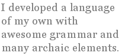

I entered working life in Sweden as a dishwasher. I was young, and filled with exuberance at the idea of living in a foreign country. It never entered my mind that many foreigners end up as dishwashers for the rest of their days, or as bus drivers, or cleaning women. If they are lucky enough to land a job at all.
I viewed my situation as temporary, and the goings-on in the kitchen as grist for my writer’s mill, though not much was happening. Potatoes were being peeled by a dour young Welshman hunkered in a corner, a steady stream of dirty plates and cutlery flowed in from the dining area, the Frenchman who was cook and owner ran in from time to time to stir the pots on the stove, and before running out again, routinely smacked the palm of his hand against his forehead at our supposed ineptitude. There wasn’t much there to build a best-seller on.
Much later I wrote a story — in the Swedish language — starring a greedy metal dishwashing machine and a young female Chilean refugee who operated it. Her hair stank of the grease boiling for French fries as mine must have done, and she was tired all the time, as I came to be, but unlike me she had a brother who was being expelled back to Chile. The story was published for real money, but by that time I had acquired a less romantic attitude toward menial jobs, and moved on.
In those early days though, I was a know-nothing enthralled by the notion of becoming a writer. Through a stroke of good fortune, I was ensconced in a one-room flat in the Old Town of Stockholm, sublet while the owner was working abroad. There I sat late at night, busily writing bad fiction and worse verse.
My little room was equipped with a two-burner heating plate near a faucet with cold running water, and an under-dimensioned bed purchased from the Salvation Army. It was a child’s bed — I realized after I had wrestled it up the stairs — and too short for me. I painted it a ghastly blue, because a can of blue paint was on sale at half-price. From somewhere I acquired a table and two chairs and painted those blue too. The hygienic facilities consisted of a row of privies in the inner courtyard. Taking the lead from friends who studied at the Royal Swedish Academy of Art School, I went to better-situated acquaintances now and then to use their bathtub, leaving a bottle of wine as payment.
A persistently cross porter who — I was convinced — hated me, guarded the entrance of the building like a dragon its treasure trove. The door was kept locked day and night. I had to ring a bell whenever I wanted in and I heard the dragging of her feet across the stone floor, and her mutterings about foreigners who were cluttering up the country. It didn’t do to come home after eleven, because then I had to throw pebbles at the window of the English girls across the hall and they weren’t always there.
The era I am describing was the early sixties. The war in Europe had ended only a little more than a decade and a half prior. Today these Old Town apartments are luxuriously renovated and much sought after. My little chamber has doubtless been incorporated with others and is perhaps a large bathroom. But back then, despite the country’s severe housing shortage, few lived in the Old Town if they could get anything else. It was a neighborhood for students and bohemian artists and foreign dishwashers, most of whom sublet. There were plans to raze it all, like so many other parts of Stockholm then being torn down. It suited me — a free and shabby spirit lately escaped from the conservatism and cornfields of Indiana — to a tee.
My lodgings were only a stone’s throw from the Royal Palace and in those terrorist-free days I could shortcut across the palace courtyard when I was in a hurry. If I tossed my metaphorical stone in another direction, I might hit the building where the Swedish Academy met to discuss the candidates for the Nobel Prize in Literature. Centuries of history lay like a patina on every side street. The building I lived in, so I was told, was where the assassin of Gustav III (you know, Verdi’s Masquerade Ball) fled to, after shooting the king. Descartes trudged Stockholm’s streets on his way to discourses with Queen Christina, perhaps overcoming a numbing blizzard by muttering Je pense, donc je suis. Wasn’t that worth not having indoor plumbing? Er, well, yes. For a while.
I learned Swedish by writing up two lists of ten words each on a daily basis. I selected the words at random from my dictionary. As I stacked the endless supply of plates, I memorized ten words in the morning and ten in the afternoon. I was keen on long words like livsförnödenheter and kontaktsvårigheter and beklädnadsartiklar and föreställningsförmåga1, none of which were of much use in daily conversation.
Every second week when I got my pay envelope, I bought yet another book by August Strindberg who, I had been told, was Sweden’s most significant author. By reading books and the evening tabloids discarded by the restaurant clientele, and absorbing a random selection of twenty words a day, I developed a language of my own with awesome grammar and many archaic elements. The English equivalent of my attempted conversation would sound something like: How fresh the air breathes this morning, Herr Svenson. Have you observe a dainty nightingale any one time? I await your orders.
It took me a long time to sort out this jumbled input, but I eventually got most of it straightened into the proper stacks.
On my free days I often went to the Royal Library, where I sat for hours translating Swedish poetry into English. One did not go brashly to the shelves and take down a tome on one’s own initiative. It was an old-fashioned kind of book cathedral to be entered as if on tip-toe, whispering to the librarian the title of the desired book. She then lowered her head determinedly and went off to fetch it, leaning slightly forward as if walking against a fierce wind. Once I accidentally pushed a book off the reading table. The reverberations were heard all the way to Oslo. Heads turned. Mouths downturned.
The two English girls who lived in the apartment opposite, drew cartoons for animated films. One day one of them asked if I was interested in translating a script. Their company was producing a film on the history of money. The Swedish version was in verse and the English one had to be too. “We can’t find a translator who will take it on,” she said. “You write poetry, don’t you?”
Well! I was so flattered to be thought of as a poet that I rashly said I could do it. They took me to their office and introduced me to their boss as “the American poet”. He must have thought I looked sufficiently arty-farty or perhaps he was desperate. He gave me the assignment.
Which really was a piece of cake after my many hours of attempting to translate Stagnelius and Södergran. The boss was pleased. The bank representative was elated. He asked to meet me and was very formal, very polite, unexpectedly handing me a most favorable letter of recommendation and advising me to use it to get future translation jobs. I never used it, but I still have it and I remain grateful for his encouraging words to a tired dishwasher.
Not many Swedes spoke English in those days. The educated members of the pre-war generation were drilled in German. English now superseded German as the language of industry and trade. It was the foreign language first taught to schoolchildren. In the general societal clean-up and post-war modernization, authoritarianism was being hustled out the back door, as the spirit of democracy was ushered through the front one. The switch to the language of the winning side was part of a political housecleaning operation.
English was in and I was on hand. Fortunately the market was large enough to accommodate me, though Stockholm was full of Brits come to teach the Swedes to speak, read and write the Queen’s English. The situation was much like that in the new EU countries today, countries like Poland and Estonia, where signs advertising English language institutes seem to sprout up like mushrooms.
Americanese was held in low esteem. Language teachers were, for the most part, from Britain or its disintegrating empire. While learning Swedish, I also had to re-learn, or at least expand, my native tongue. Full of uncertainty, my Swedish clients regarded my English as pidgin and did not hesitate to muddle my texts with what they had learned the night before in classes that stressed Received Pronunciation and spellings like favourite and amongst.
I kept my day job, having advanced from dishwasher to waitress to cashier.
Skipping over a lot of years, you will next find me pounding the keyboard as translations manager for a computer manufacturer. I was a single mother of three by then, studied evenings at the university (which in Sweden is wonderfully free of charge). I was a full-time mother, a full-time employee, and carrying a full load of studies.
During the many years when my writing priority was to pay the rent and put food on the table, I continued sneak-writing poetry and prose. Mostly poetry, since I could keep a text of that size in my head and work it while walking to my day job or ironing clothes or stirring the gravy. I sometimes bought IRCs and sent off a text to a magazine. After 3 to 9 months, an envelope with my handwriting and a foreign stamp arrived in the post. When I opened it, a standard rejection slip and a horselaugh would fall out onto the kitchen table.
Through I free-lanced through all the intervening years, I didn’t dare become fully self-employed until my last child was fledged and flown. What I particularly remember about the first week I did not punch a time clock was a oneness with the world around me: the inquisitive and hopeful blue tit that joined me when I sat on the balcony with my morning coffee; the joy of watching the rain fall as I sat at the desk I usually occupied late at night; the exquisite outline of a tree branch as I walked through the park. For the first time in years I had time to see what I was looking at.
The rent still had to be paid though. The most important thing I learned as an employed writer and translator is to not fiddle faddle around waiting for the muse to breeze in and climb onto your shoulder. A deadline is a deadline is a deadline. You just sit down and do it.
A friend (who may have tired of being my one-woman audience) suggested that I apply for a weekend workshop arranged by a local group of amateur writers. I had no intention of writing in Swedish, I told her, somewhat uppity, and I did not want to be an amateur writer. Anyway, I couldn’t possibly say in Swedish, what I could say in English. Wasn’t English the most beautiful language in the world? I hadn’t yet learned that I still had a lot to learn, that I will always have a lot to learn.
I had a yearning to discuss with like-minded though, to acquire friends who were interested in the writing process. I applied to participate in the weekend workshop, and though I was not a member, they graciously let me join them. They insisted, however, that I write in Swedish and paired me off with a young woman artist. She was to make a sketch from one of my poems and I was to make a poem from one of her sketches. Obviously I couldn’t let her down, and I suddenly had two poem-like thingies in the Swedish language. Later a poem was accepted by a magazine the first time I sent it off. What luck! It was even illustrated, and occupied the entire back cover of the magazine. Wow! That was encouraging.
After that weekend workshop, I took a trembly, but giant step and applied to a folk high school to attend a more advanced one-week summer course for novice writers. I submitted some of my Swedish texts, and wow again. They let me in.
I’m saving the rest for my memoirs.